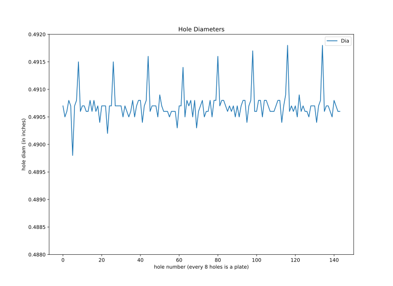
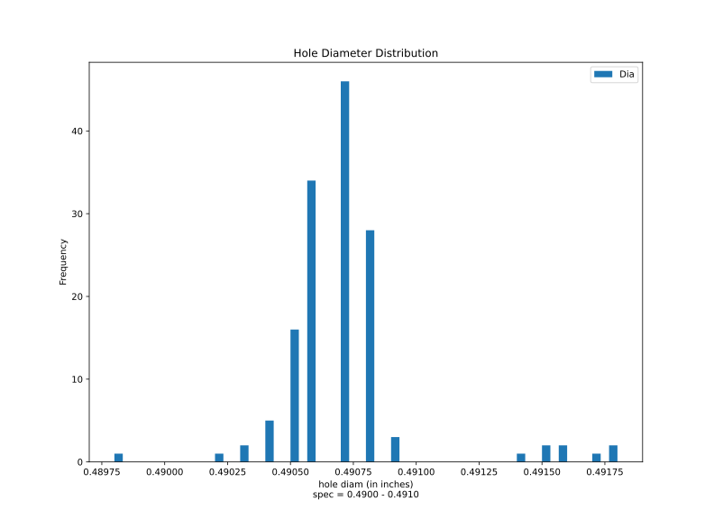
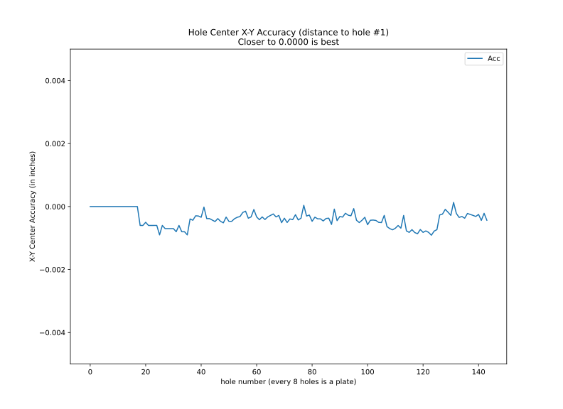
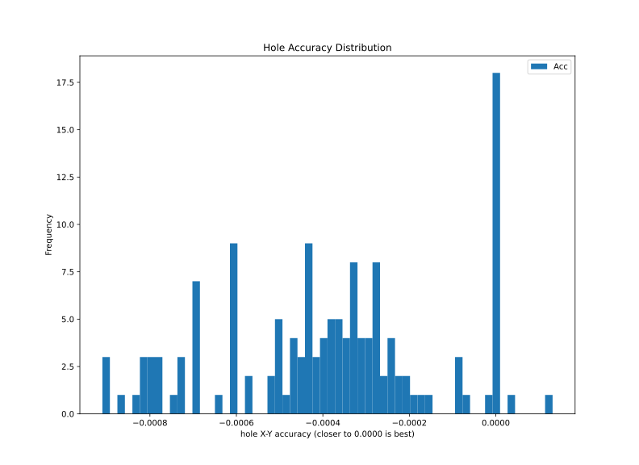
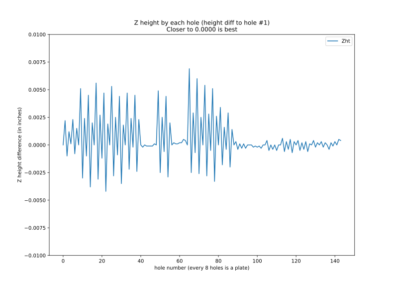
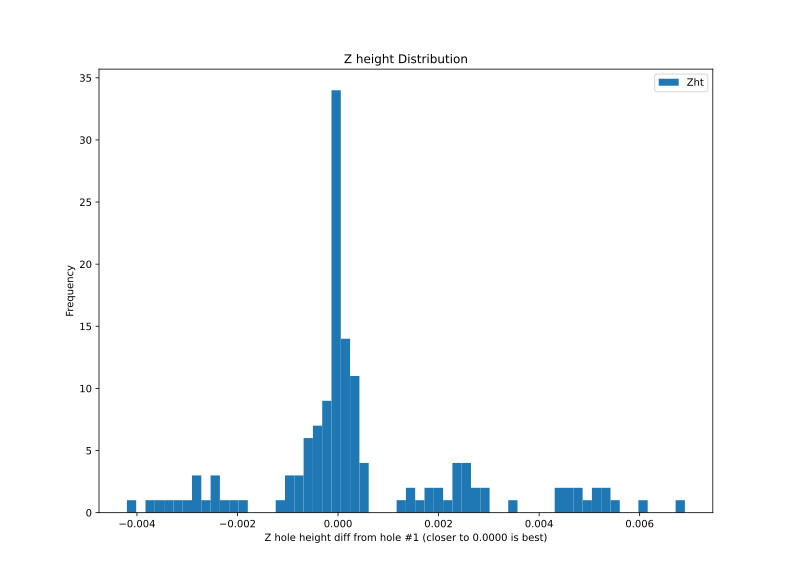

Measurements from Haas CNC Machine using CMM Touch Probe
{{ head_table }}
MEASUREMENTS
{{ meas_01a_table }}
{{ meas_01b_table }}
{{ meas_01c_table }}
{{ meas_01d_table }}
{{ meas_02a_table }}
{{ meas_02b_table }}
{{ meas_02c_table }}
{{ meas_02d_table }}
DIFFERENCES
(X1diff and Y1diff is diff to hole #1. This eliminates error to edge).
L1diff is the total length difference. This is the most critical for assessing the accuracy of the X-Y centers.
The length difference is computed as pythagorean
theorem. So, the X and Y difference are squared. Therefore the difference is always negative. The sign does not change.
{% for table in meas_03_tables%}
{{ table }}
{% endfor %}
PLOTS
All of the hole diameters from all the holes on all of the plates.
The spec is 0.4900 to 0.4910. If a hole diameter is too small, dirt maybe the cause.


All of the hole locations from all the holes on all of the plates. To eliminate errors caused by measuring from the side of the plate, math was
done on the collected data. The X-Y location of hole #1 was used as the origin. Then, math calculations were done to measure the distance from the hole # 01
location to the current location. This value then is compared to the specification (theoretical) value. The closer to zero, the more accurate the hole
center location is. Because the distance (length) measurement has squares in it, the sign never changes so the difference is always negative.


All of the Z heights by each hole.
The differences in Z heights is not just the plate not being perfectly flat,
But also that the plate maybe tilted in the Z plane in the vise.

